This page provides links to handy step-by-step tutorials for CT3Dcellas workflow. Click on any of the cards below to be taken to a Jupyter Notebook render of the specified tutorial.
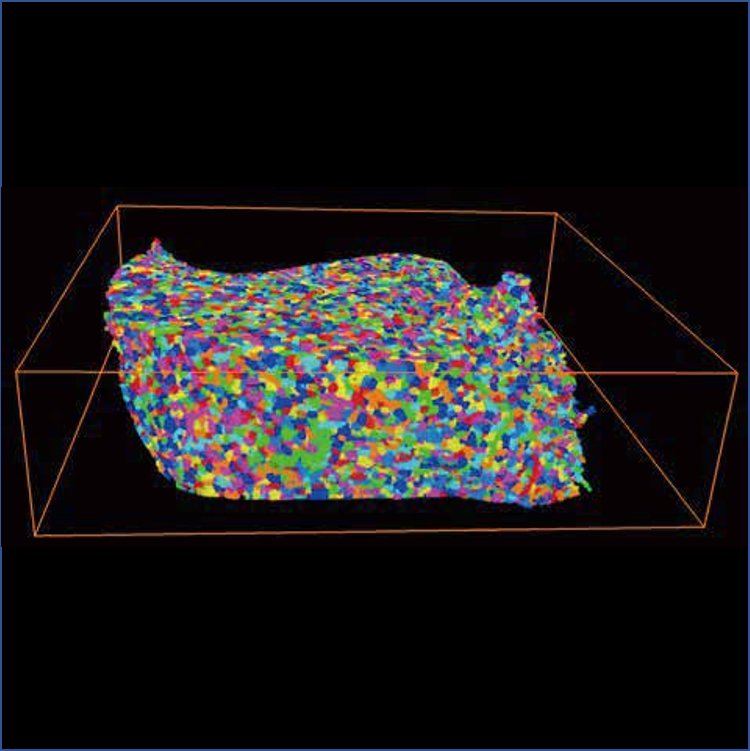
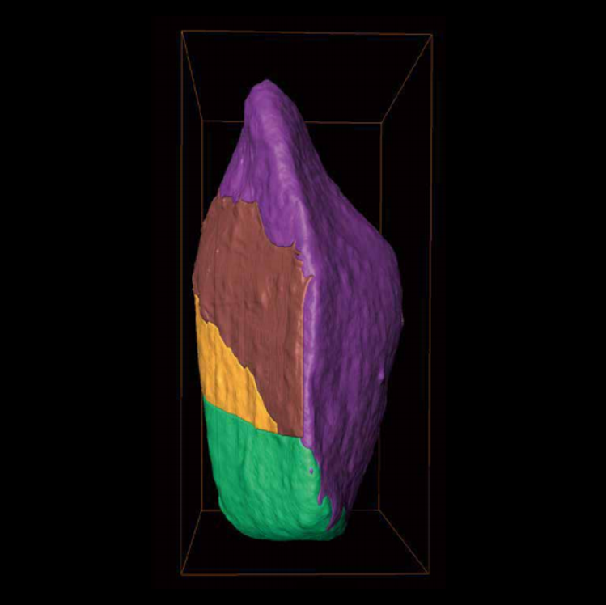
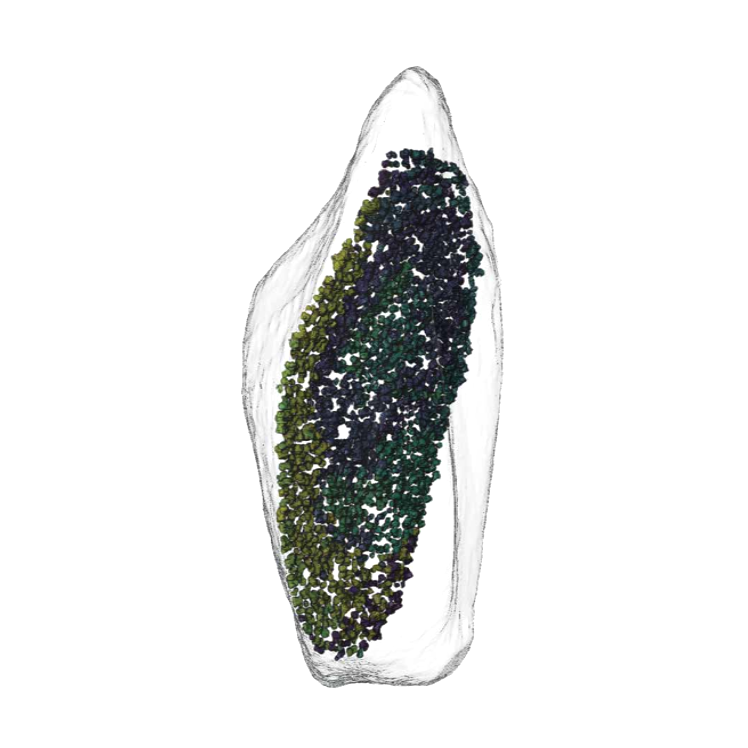
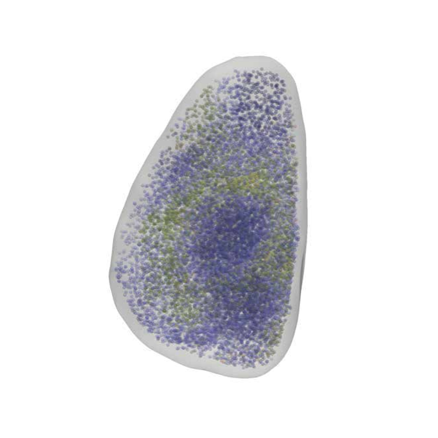
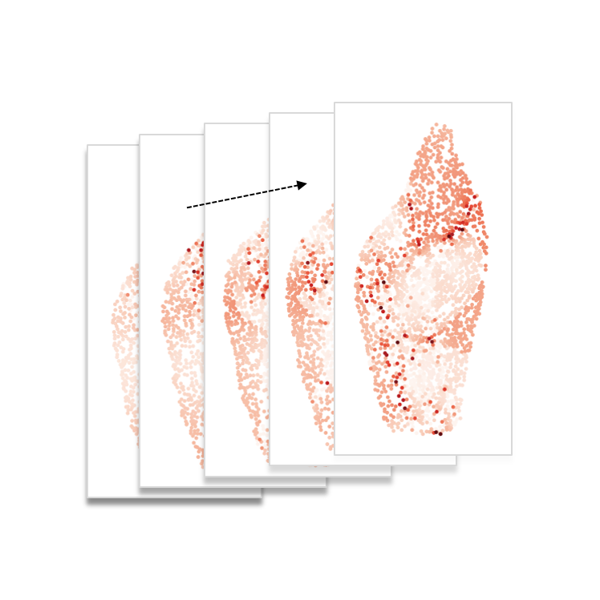
Step-by-step video tutorials for tissue segmentation workflow (click to play):
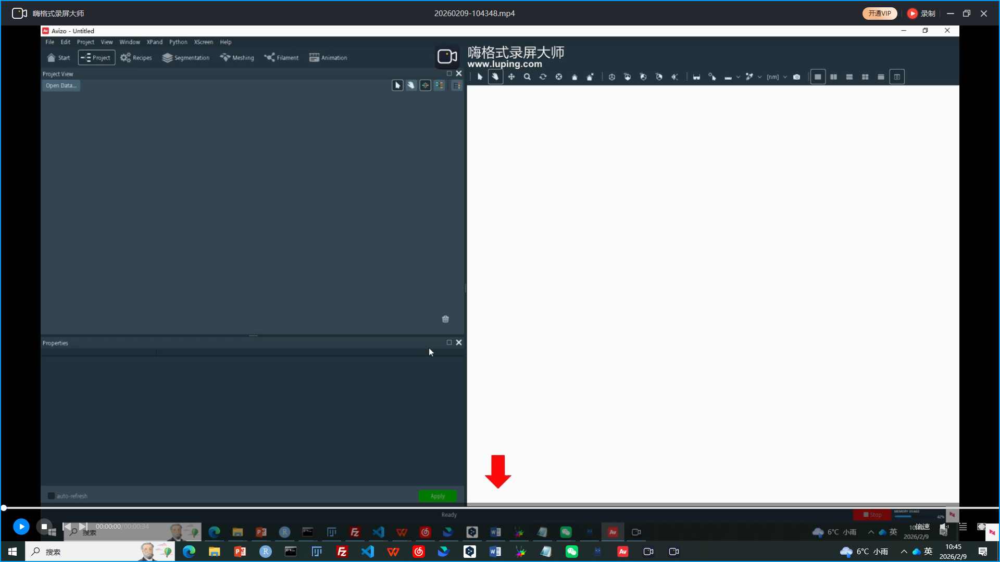
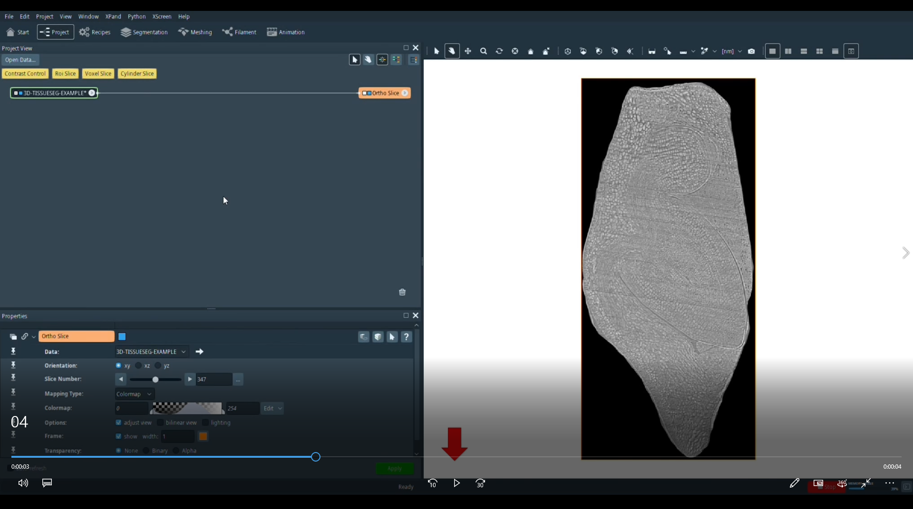
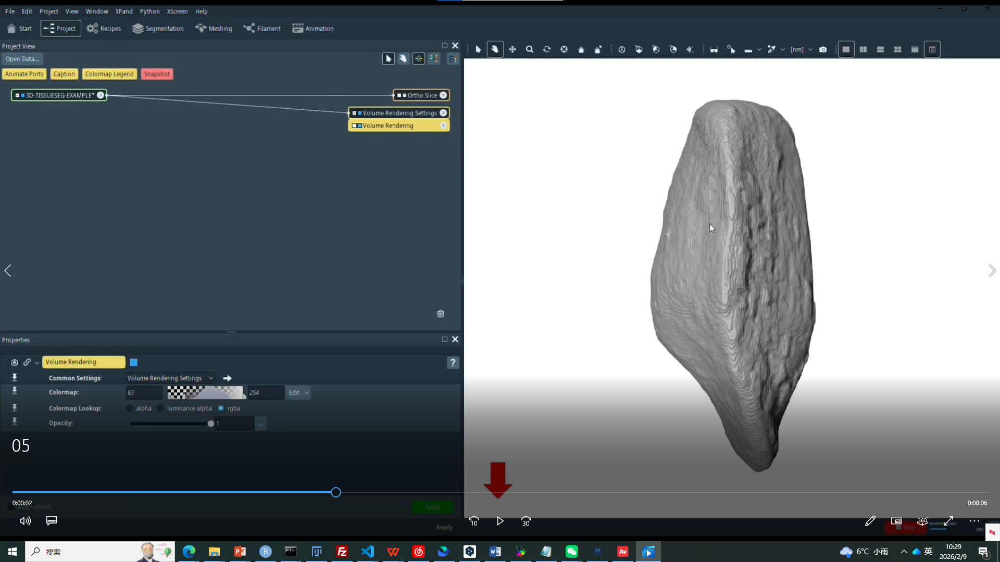
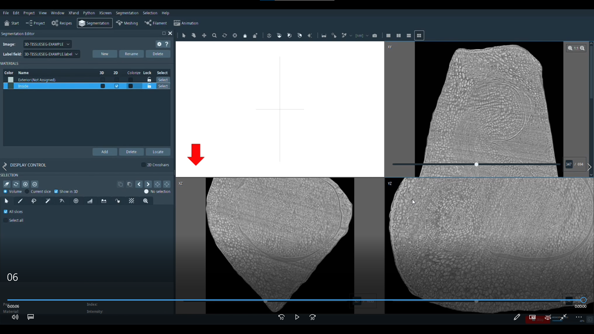
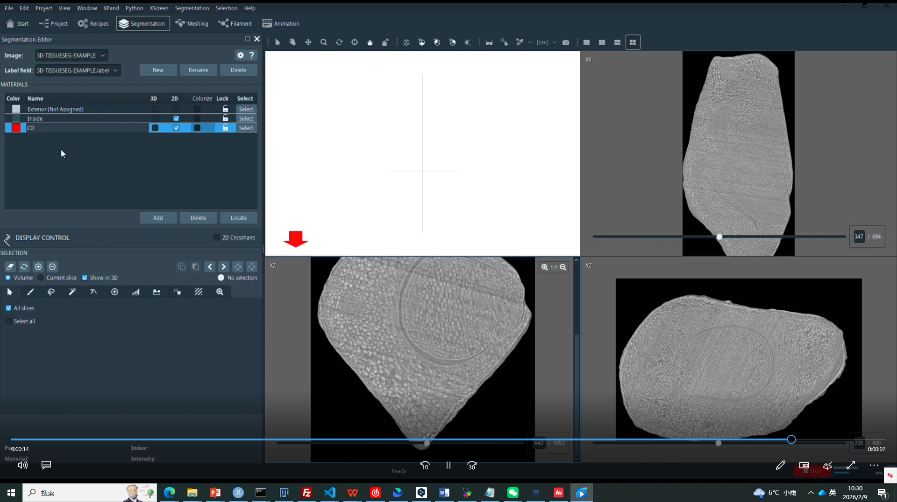
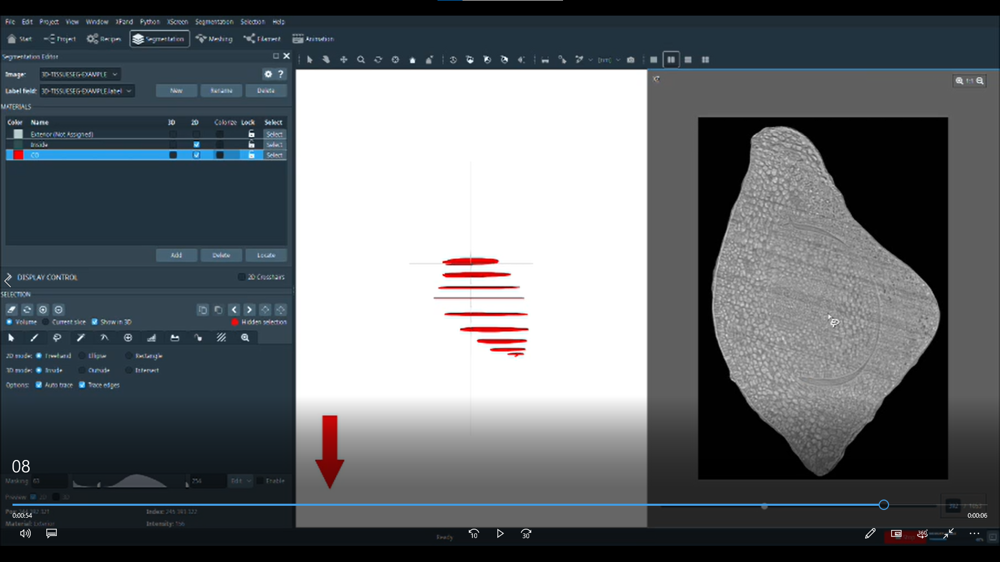
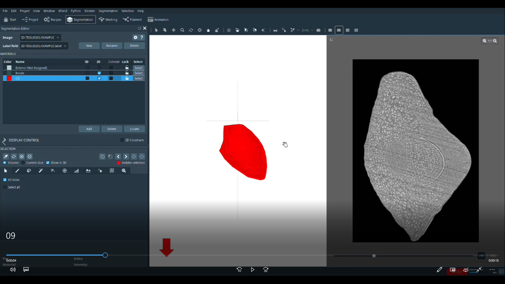